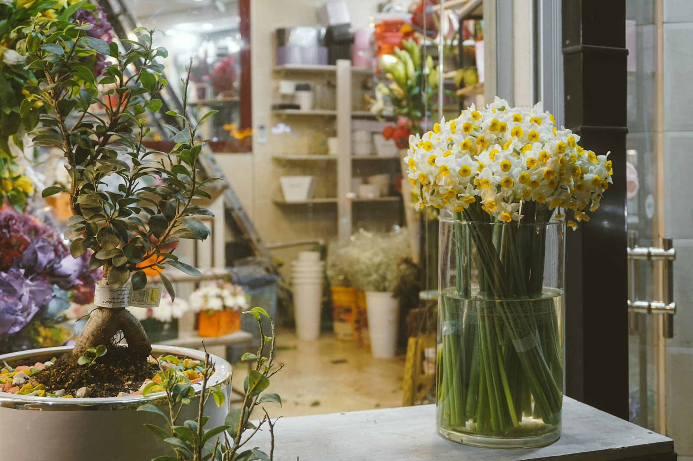

1FUguisu Building · Room 302
蔵前のウグイスビル、
3階の小さな花屋。A little flower shop,
on the 3rd floor in Kuramae.
街歩きの途中でふと見つかる、珍しい花にも出会える花屋です。ギフトやウェディング、イベントの装花まで、ご相談ください。A florist you stumble upon while strolling Kuramae — with flowers you won't see everywhere. Gifts, weddings and event styling, all by consultation.

Choose by occasion
どんな花を贈りますか？What are the flowers for?
シーンを選ぶと、ご相談のイメージが見られます。Pick an occasion to see an idea to start from.
→ ご予約・ご相談はInstagramのDMまたはメールで承ります。→ Reservations and consultations by Instagram DM or email.
花束・ギフトBouquets & gifts
大切な方への贈り物に。For someone special.
ウェディングWeddings
ご相談ください。Let's talk.
イベント・装花Events & styling
空間を花で彩ります。Flowers for your space.
季節の花Seasonal stems
珍しい花材にも出会えます。Including unusual varieties.
Opening days
営業日・アクセスHours & access
- 住所Address
- 〒111-0051 東京都台東区蔵前4-14-11 ウグイスビル302号室Uguisu Bldg. #302, 4-14-11 Kuramae, Taito-ku, Tokyo
- 電話Phone
- 090-9283-7064
- @orchard_flowershop
※ 最新の営業日はInstagramでお知らせしています。Latest opening days are posted on Instagram.